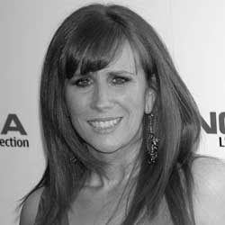

| |
| Home The Doctors The Companions The Villains Show History |
Catherine TateCatherine Tate (born Catherine Ford on 12 May 1968) is an English comedian, actress and writer. She has won numerous awards for her work on the sketch comedy series The Catherine Tate Show as well as being nominated for an International Emmy Award and seven BAFTA Awards. Following the success of The Catherine Tate Show, Tate played Donna Noble in the 2006 Christmas special of Doctor Who and later reprised her role, becoming the Doctor's companion for the fourth series in 2008. In 2011, she began a recurring role as Nellie Bertram in the US version of The Office and was a series regular until the series ended. |
|
Kayleen Garcia |
Ann Marie Skjold |
Content derived from the Doctor Who Wikipedia. |